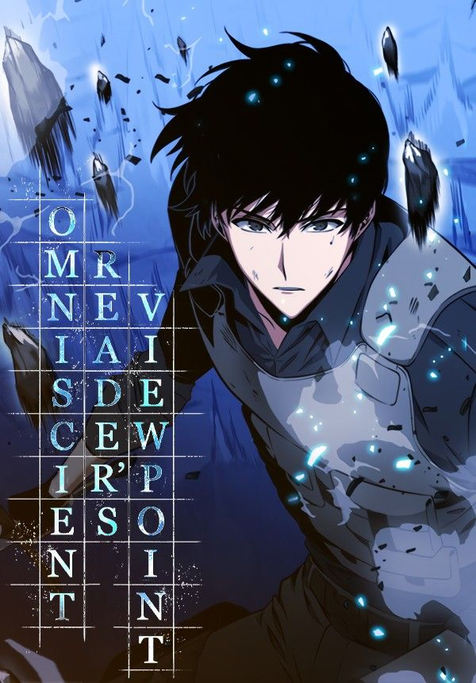

Membaca manwha adalah hobi yang menyenangkan sekaligus mengasyikkan. Setiap lembaran Manwha menghadirkan cerita berwarna, mulai dari petualangan seru, kisah persahabatan, hingga momen penuh haru. Perpaduan gambar dan tulisan membuat jalan cerita lebih hidup serta mudah dipahami, sehingga pembaca bisa terbawa suasana seolah berada langsung di dalam kisah tersebut. Tidak hanya sebagai hiburan, membaca Manwha juga dapat menambah wawasan, memperluas imajinasi, serta memberi inspirasi dari tokoh dan pesan moral yang terkandung di dalamnya. Salah satu Manwha favorit saya adalah Omniscient Readers Viewpoint (ORV), yang menghadirkan dunia penuh misteri, aksi, dan emosi yang begitu nyata. Tokoh utamanya, Kim Dokja, bukanlah pahlawan biasa, melainkan seorang pembaca yang tiba-tiba terjebak dalam dunia cerita yang selama ini ia ikuti. Alurnya yang penuh plot twist selalu membuat saya penasaran di setiap bab. Bagi saya, ORV bukan sekadar komik, melainkan sebuah pengalaman membaca yang membuka imajinasi sekaligus memberi pesan mendalam tentang arti perjuangan, persahabatan, dan pengorbanan.
Kembali